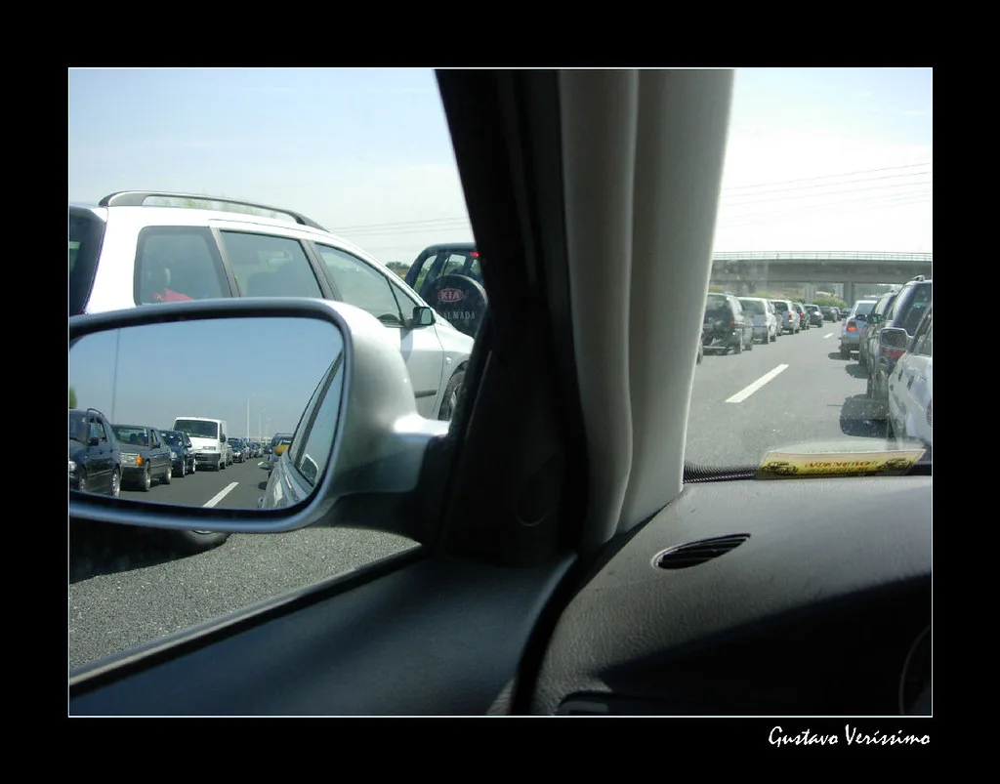
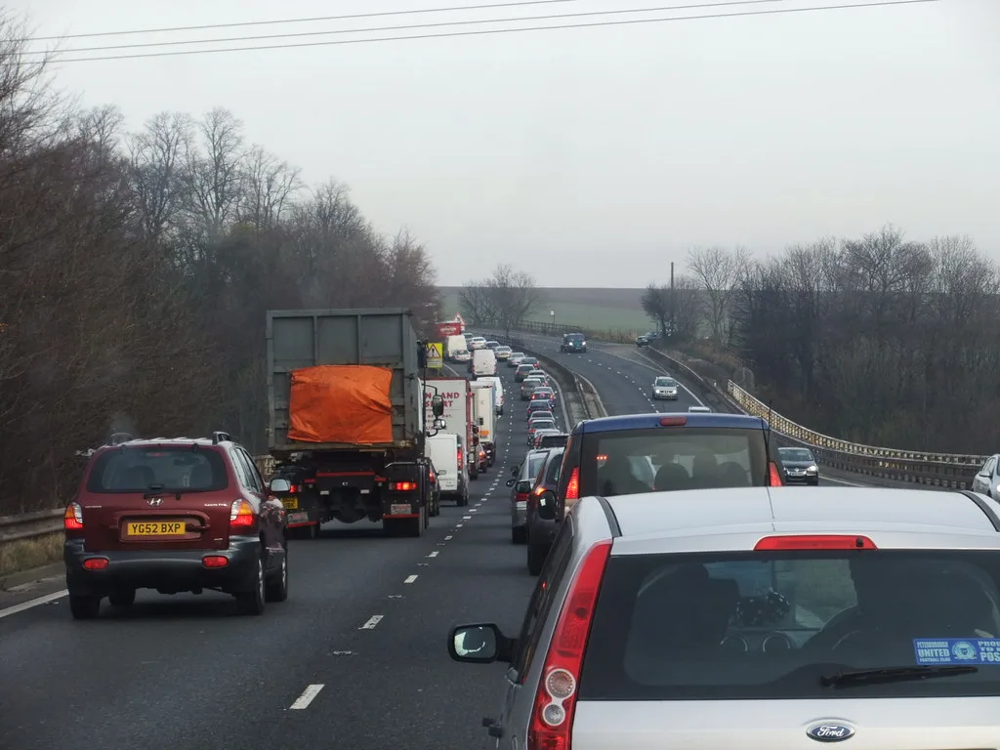

추석 귀경길 오늘 새벽 정점…나흘간 고속도로 통행료 면제
추석 연휴 사흘째인 26일, 전국 고속도로는 귀경길 정체가 집중되며 이번 연휴 기간 중 가장 혼잡한 하루를 보내고 있다. 한국도로공사에 따르면 귀경 방향 정체는 전날인 25일 오후 3~4시께부터 본격화해 밤사이 이어졌으며, 차량 흐름은 26일 오전 2~3시께가 돼서야 완전히 해소될 것으로 전망됐다. 귀성길 정체가 어느 정도 풀린 뒤에도 귀경길 혼잡은 새벽까지 이어진 셈이다.
한국도로공사는 앞서 25일 전국 고속도로 교통량이 684만대에 이를 것으로 예상된다고 밝혔다. 이 가운데 수도권에서 지방으로 이동하는 차량이 47만대, 지방에서 수도권으로 향하는 차량이 46만대에 달할 것으로 추산됐다. 귀성 방향은 오후 1~2시, 귀경 방향은 오후 3~4시께 각각 가장 혼잡할 것으로 전망돼, 연휴 기간 이동 시점을 조절하려는 운전자들의 참고가 됐다.

도로공사가 제시한 예상 소요시간을 보면 서울까지 부산은 8시간40분, 울산은 8시간20분, 대구는 7시간40분이 걸릴 것으로 추산됐다. 이어 목포 7시간20분, 광주 6시간50분, 대전 4시간20분, 강릉 4시간10분 순으로 나타나 지역별 거리와 도로 사정에 따라 소요시간 편차가 컸다. 이 때문에 이번 연휴에도 도로공사는 실시간 교통 상황을 반영한 '맞춤형 교통예보'를 제공하며 시간대별 예상 소요시간을 안내해왔다.
한편 이번 추석 연휴 기간에는 나흘 연속 고속도로 통행료가 면제된다. 도로공사가 운영하는 재정고속도로는 물론 민자고속도로까지 포함해 24일 0시부터 27일 자정까지 모든 차량에 통행료를 받지 않기로 한 것이다. 통상 명절 연휴마다 시행돼온 조치이지만, 귀성과 귀경이 겹치며 교통량이 몰리는 이번 연휴 기간에는 통행료 면제가 장거리 이동에 나선 운전자들의 부담을 그나마 덜어주는 요인으로 작용했다는 평가다.

이번 연휴는 교통사고와 안전사고에 대한 주의도 함께 요구되는 시기다. 최근 5년간 통계를 보면 추석 연휴 시작 전날 하루 평균 교통사고는 750건으로, 평소 일평균 541건의 약 1.4배에 달했다. 또 벌초와 성묘가 몰리는 9월에는 벌 쏘임 환자가 연중 가장 많이 발생하고, 명절 음식을 조리하는 과정에서 주택 화재도 평소보다 크게 늘어나는 경향이 있는 것으로 나타나 각별한 주의가 필요하다는 지적이 나온다.
도로공사와 각 지방자치단체는 귀경길 정체가 정점을 지나는 26일 새벽까지 도로 상황을 예의주시하며 사고 예방과 안전 관리에 나서고 있다. 특히 장시간 운전이 이어지는 연휴 특성상 졸음운전으로 인한 사고 위험이 높아지는 만큼, 휴게소를 활용한 충분한 휴식과 2시간 단위 교대 운전이 권장되고 있다. 갓길 정차나 무리한 끼어들기 역시 후속 추돌사고로 이어질 수 있어 자제가 필요하다는 지적도 나온다.
27일 자정까지 통행료 면제 조치가 이어지는 가운데, 남은 연휴 기간에도 이동을 앞둔 운전자들은 도로공사가 제공하는 실시간 교통 정보와 시간대별 예보를 확인해 혼잡 시간대를 피하는 것이 좋다는 조언이 나온다. 올해 추석 연휴는 27일까지 이어지는 만큼, 마지막 날까지 안전한 귀가를 위해 무리한 운행보다는 여유 있는 일정 조정이 필요하다는 당부가 이어지고 있다.